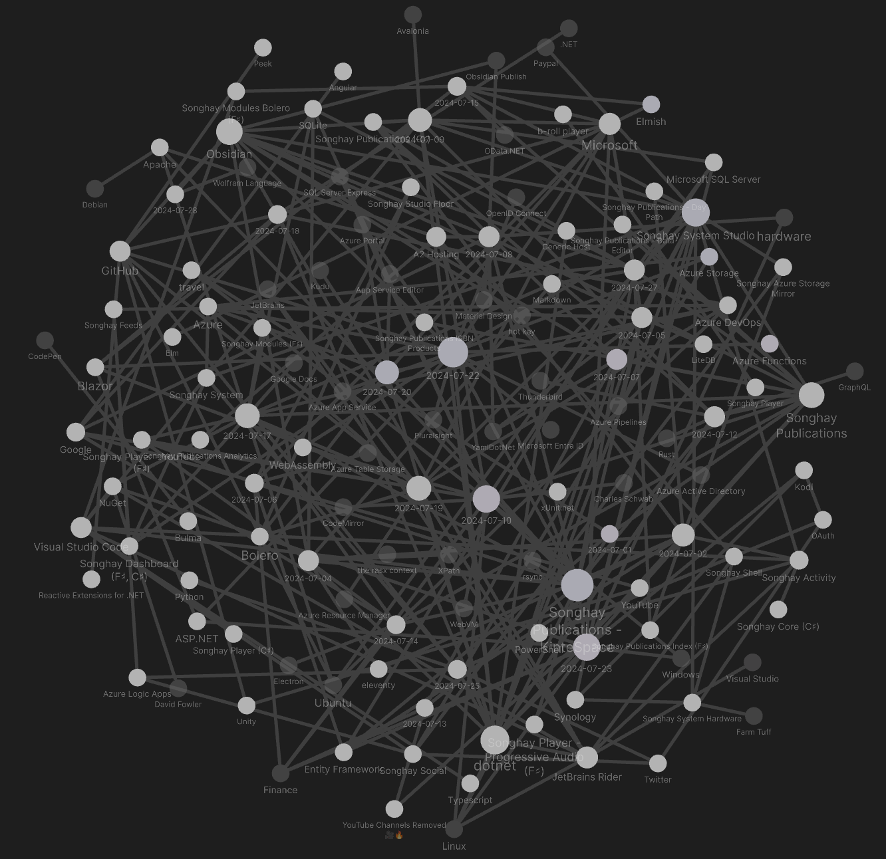
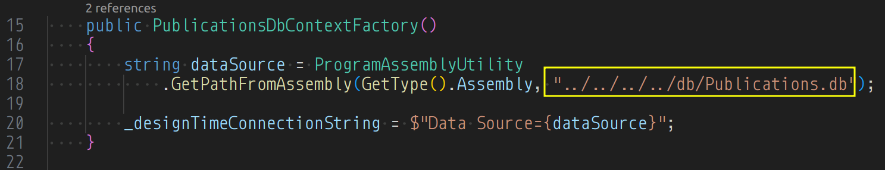
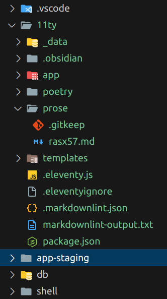
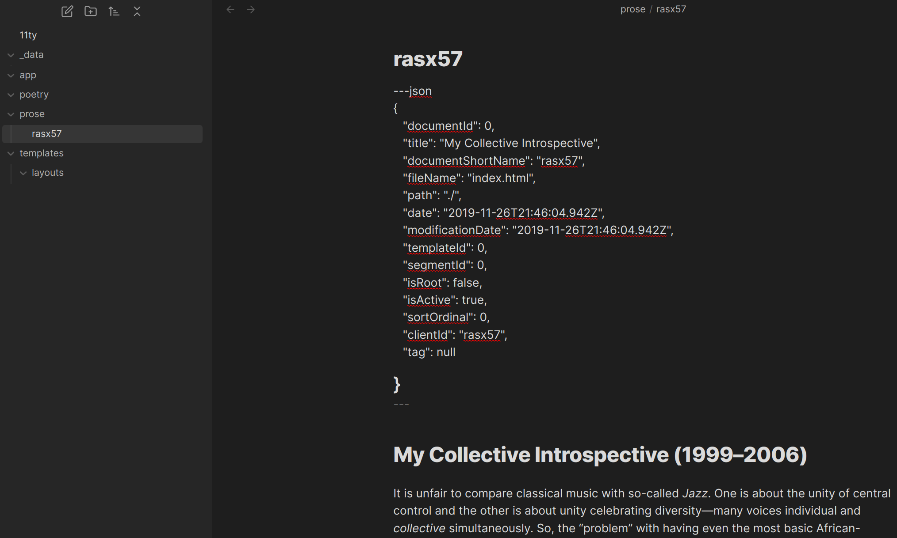
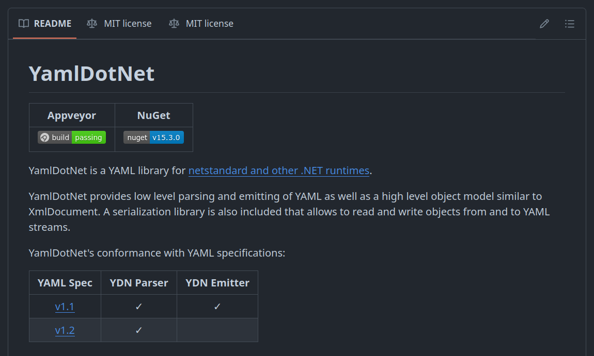
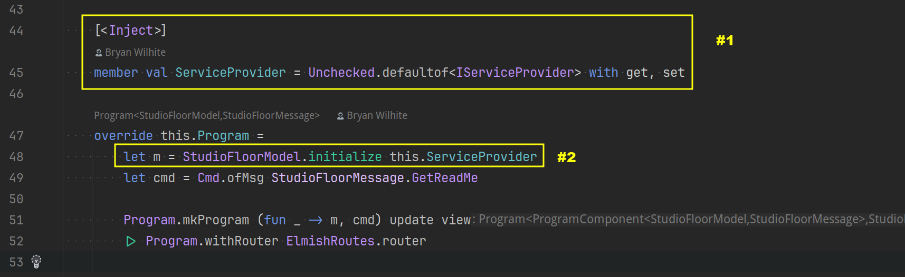
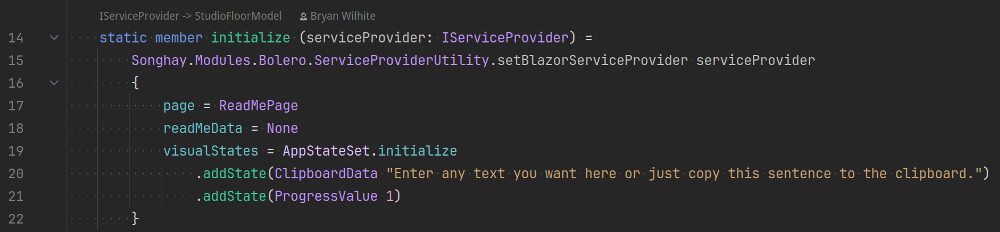
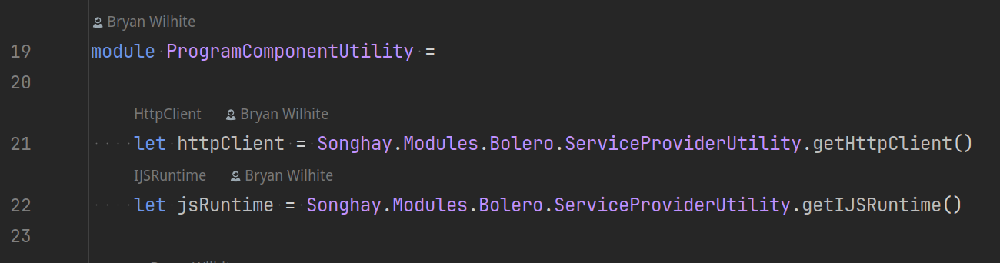
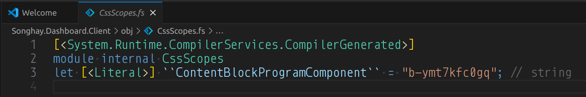

studio status report: 2024-07
month 07 of 2024 was about returning to Entity Framework, inclusion of Obsidian in Publications work flow and ‘too many’ other interesting advances
The Obsidian graph for this month looks very much like ‘too many’ interesting advances:

I have opened the Songhay.Publications.DataAccess namespace which introduces modern, “code-first” Entity Framework accretive migrations to my Studio. There is a Publications.db SQLite file that will track the Songhay Publications Index for kintespace.com. This is data that will back the Songhay Index Bolero app (Songhay.Modules.Bolero.Index❓) that is proposed below (see “sketching out development projects”). Notes below will go into detail on this (and a full Blog post is proposed).
Songhay.Modules.Bolero version 6.4.1 [📦 NuGet] was released this month which contains a far better understanding of how to expose Blazor services to F♯ functions (via the ServiceProviderUtility—see in excerpts below).
The biggest news (which is jampacked with interesting advances) is represented by a simple PowerShell script whipped up this month: Convert-KinteProse-To-Markdown.ps1. This script actually takes the old XHTML files from kintespace.com and converts them to Obsidian-friendly markdown. Converting HTML to markdown with pandoc was yet another non-trivial effort (I should have notes on this to show below). This conversion process is the first “real” sign that I am actually reviving/rebuilding/upgrading my Publications pipelines in my Studio 👏 I have decided to convert one file at a time and review the prose by hand to ensure some decent level of correctness ⏳ My 2024 article, “Songhay Publications and the Concept of the Index,” should help to place what I am talking about here in the larger context. This article reminds us of my Publications schema: the Segment, the Document and the Fragment.
Document data shows up as the YAML front matter in the markdown files generated from my Convert-KinteProse-To-Markdown.ps1 script. The Fragment concept gets ‘lost’ in the markdown prose. The Segment data takes us back to the Songhay Publications Index. This work is finally underway. More details and better explanation later. It has been a long, miserable journey 👴👣 Here are the selected notes of the month:
yes, Songhay.Publications.DataAccess should be moved into the [[Songhay Publications (C♯)]] Solution #to-do
Now that a substantial amount of ignorance around [[Entity Framework]] has (finally) been addressed, PublicationsDbContextFactory is what keeps the Songhay.Publications.DataAccess project in the [[Songhay Publications - KinteSpace|Songhay Publications: kinté space]] Solution.
It all boils down to this relative path, "../../../../db/Publications.db":

Today, the suggestion is that this relative path to Publications.db should be replaced with an absolute path and stored in a conventional environment variable, say, SONGHAY_PUBLICATIONS_DB_PATH.
Moreover, this new absolute path should point to a location under the [[Songhay Azure Storage Mirror]] directory (or I could go back to the eldest \dataRoot\publications convention).
[[dotnet|.NET]]: C♯13 will overload its params-based array signatures (T[]) with ReadOnlySpan<T>
This video has the news [📹 watch ]:

What’s new in C# 13 | BRK186
Partner Software Engineer at Microsoft, Steven Toub, proposed this in 2022.
[[Songhay Publications - KinteSpace|Songhay Publications: kinté space]]
the Songhay.Publications.KinteSpace/11ty directory 🚜✨
The Publications /11ty directory represents the experiment to combine an [[Obsidian]] vault and an [[eleventy]] generator:

- [[eleventy]] will write static HTML to the
/app-stagingdirectory - the [[eleventy]]
/_datadirectory will use static JSON, generated from a [[SQLite]] database in the/dbdirectory (for now)
Now, the /shell folder might have ‘limited use’ because of setting up a temporary camp 🏕 under Songhay.Publications.KinteSpace.Tests (mentioned [[2024-07-02#Songhay Publications - KinteSpace Songhay Publications kinté space the next moves will be inside the test project 🔬✨|previously]]).
what the /11ty directory looks in [[Obsidian]]
Only that rasx57.md ‘draft’ shows up in [[Obsidian]]:

- [[Obsidian]] might force me to convert JSON front matter to YAML
- the front matter for [[Markdown]] files under
/poetrycould get complicated - [[Markdown]] files under
/appwill be prose about [[Songhay Publications - KinteSpace|kintespace.com]] itself instead of the literary prose intended for the/prosedirectory - the
/templatesfolder might be able to serve double duty for [[eleventy]] and [[Obsidian]]
Welcome to the publishing business!
[[dotnet|.NET]]: there is no System.Yaml namespace built by [[Microsoft]]
Today, I ‘officially’ recognize that something like [[YamlDotNet]] is needed (even though it does not yet support [[dotnet|.NET 8.0]]—but does support netstandard 2.x):
 https://github.com/aaubry/YamlDotNet
This ‘official’ recognition is important because the editing experience planned for [[Obsidian]] will require saving document front matter as YAML instead of JSON.
the [[Azure]] Pipelines task reference is full of deploy tasks 😐💡
Before this year, I would erroneously assume that the “Azure Pipelines task reference” would exclusively full of build tasks. It’s been a while. Things have changed: there is an entire section dedicated to deploy tasks.
This Studio should incorporate the following [[Azure Pipelines]] deploy tasks #to-do (in decreasing level of immediate need):
- Azure Web App (
AzureWebApp@1) [📖 docs ] - Azure Functions Deploy (
AzureFunctionApp@2) [📖 docs ] - Azure CLI (
AzureCLI@2) [📖 docs ] - Azure PowerShell (
AzurePowerShell@5) [📖 docs ]
The following package tasks should be needed as well:
I assert that [[Microsoft]] prioritizes GitHub Actions over [[Azure Pipelines]].
[[Entity Framework]]: no, there is no provider for [[Azure Table Storage]]
Vickers himself answers explicitly in 2019:
We currently have no plans.
“How to Access Azure Table Data Using Entity Framework” says weird, 1990s shit like:
Add a reference to
System.Data.CData.AzureTables.Entities.EF6.dll, located in the lib -> 4.0 subfolder in the installation directory.
The largest list of providers I can find (so far) is the 2024 list from [[Microsoft]]. I am surprised that the list of providers is not larger.
[[Finance]]: “How Americans Are Paying For Vacation”
Spoiler: it’s loans.

How Americans Are Paying For Vacation
[[dotnet|.NET]]: when the YamlDotNet folks deserialize YAML, they are boxing IDictionary<object, object> 🗃😐
I am sure there is some really cool and esoteric reason to box IDictionary<object, object> but my YamlUtility.DeserializeYaml make this news explicit:
public static IDictionary<object, object>? DeserializeYaml(string? yaml)
{
if (string.IsNullOrWhiteSpace(yaml)) return new Dictionary<object, object>();
IDeserializer deserializer = new DeserializerBuilder().Build();
IDictionary<object, object>? yO = deserializer.Deserialize(yaml) as IDictionary<object, object>;
return yO;
}
Now I can write yO like how I have written jO! This makes all the Kenyan supermodels cheer!
[[Songhay Publications (C♯)]]: MarkdownEntry.FrontMatter should be of type IDictionary<string, string> ❓
The short answer is no. The reasoning behind doing this is to put MarkdownEntry.FrontMatter in a position where it can support JSON and YAML front matter. But look closer at this YAML:
documentId: 9336
title: 'Ezrah Aharone: Africa without African Americans'
documentShortName:
fileName: kp_aharone0.html
path: ./
templateId: 9059
segmentId: 4524
isRoot: true
isActive: true
sortOrdinal:
clientId: 2006-08-10-20-03-40-IDAIACBBIDAJACBB-1
tag: 2011-07-Upgrade
endDate:
inceptDate: 2006-08-10T19:49:39.0000000
modificationDate: 2011-07-12T16:35:16.6500000
Like JSON, YAML is not just a bunch of strings. Like JSON, it has ‘types.’ YAML has a schema concept which defines “tags” with names like “Boolean,” “Integer” and “Floating Point”—and these names come from “JSON Schema”—which appears to be the YAML way of saying that it is ‘related’ to JSON.
Getting back to [[Songhay Publications (C♯)]], the bottom line is that IDictionary<string, object> is in the position to support YAML and JSON but I am not attracted to boxing a bunch of stuff in object. This aversion leads me to one conclusion: ‘extend’ YAML support from the existing JsonObject. These ‘extensions’ would be in, um, extension methods such as:
IReadOnlyCollection<string>.ToFrontMatterLinesAndContentLinesand/orFileInfo.ToFrontMatterLinesAndContentLinesIReadOnlyCollection<string>.LookLikeJsonFrontMatterIReadOnlyCollection<string>.LookLikeYamlFrontMatterIReadOnlyCollection<string>.ToJsonStringIReadOnlyCollection<string>.ToYamlStringJsonObject.ToYamlFrontMatterand/orMarkDownEntry.ToYamlFrontMatter
All of the proposed methods above are for reading [[Songhay Publications|Publications]] markdown. The line is the smallest unit of reading markdown. ToFrontMatterLinesAndContentLines revisits what is going on inside MarkdownEntryExtensions.ToMarkdownEntry which currently assumes that all markdown “entries” contain JSON front matter #to-do
The challenge with ToJsonString and ToYamlString is dealing with the possible states of a collection of lines representing front matter (FrontMatterLines). These states are:
- JSON lines
- YAML lines
- Unknown lines
The LookLike*FrontMatter methods will address these possibilities.
Finally, the ToYamlFrontMatter method is there to ‘extend’ YAML support from the existing JsonObject. Here are more design-related comments about this approach:
- as of this writing, there is no [[dotnet|.NET]] equivalent of
JsonElementorJsonObjectfor YAML: there is noYamlObject(and in [[YamlDotNet]] the closest definition I can find is the sub-atomic particle,Mark[🔗 GitHub ]) - because I am “brainwashed” by F♯, I am aware that primitive obsession in C♯ is a “bad” thing: so cramming YAML in
stringand building on top it is not going to do it for me—I prefer to define front matter asJsonObjectinstead of juststring
yes, [[Obsidian]] can be used as a commanding platform
Do I write a bunch of Studio desktop apps in, say, [[Avalonia]], to get real work done? The short answer is, not yet. [[Obsidian]] can join [[Visual Studio Code]] as another customizable text editor that effectively serves as a “line of business” application just like a WPF application from the turn of the century.
The Shell commands plugin for Obsidian looks like what I am looking for to get going #to-do The authors of this plugin are generous enough to refer to similar tools just in case it is not enough:
- https://github.com/Vinzent03/obsidian-advanced-uri
- https://github.com/chetachiezikeuzor/cMenu-Plugin #to-do
- https://github.com/phibr0/obsidian-customizable-sidebar #to-do
- https://github.com/chhoumann/quickadd
- https://github.com/konodyuk/obsidian-text-expander #to-do
[[Songhay Publications - KinteSpace|the kinté space]]: “Kids Who Get Smartphones Earlier Become Adults With Worse Mental Health”
Why would this be? What changed in the early 2010s that could have rapidly reduced the mental health of teens around the world, with a bigger impact on girls? At the After Babel Substack, we have argued that the sudden switch of teen social life from flip phones (which are designed for communication) to smartphones (which enabled continuous access to social media and much higher levels of phone addiction), is the major cause, though not the only one. There are unique factors at work in each country, but we know of no alternative that can explain the synchronized, gendered, and global decline in teen mental health.
—“Kids Who Get Smartphones Earlier Become Adults With Worse Mental Health”
[[Songhay Modules Bolero (F♯)]]: the new IServiceProvider-ServiceProviderUtility pattern
In our conventional *ProgramComponent, we have two things to express to establish this IServiceProvider-ServiceProviderUtility pattern:

- inject
IServiceProvider initializethe exposure ofIServiceProviderwithServiceProviderUtility.setBlazorServiceProvider
The initialize function:

Line 15 (above) calls setBlazorServiceProvider.
Once IServiceProvider is initialized, F♯ modules can reference provided services like this:

[!important] This approach eliminates the the artificial barrier between FP and OOP when we think of the availability of [[Blazor]] services.
[[Songhay Player - YouTube (F♯)]]: I got entangled in [[Azure DevOps]] pipelines drama because of a build server not being able to see the code generated for CssScope 👀
[[dotnet|.NET]] 2.x being called from DotNetCoreCLI@2 could have compiled my ‘modern’ [[dotnet|.NET 6.0]] code. The problem was not solved by rewriting my YAML scripts (which is still useful in general). The problem was that, again, I forgot about this shit:

This code needs to be auto-generated so it can ensure a unique string like "b-ymt7kfc0gq" is generated so the [[Blazor]] CSS scope will be uniquely identified.
This failure message from [[Azure DevOps]] (mentioned [[2024-07-17#Songhay Dashboard (F♯, C♯) pipeline test step 👟🔥 fails|earlier]]) was trying to tell me that it could not find the CssScopes.fs file:
D:\a\1\s\Songhay.Dashboard.Client\Components\ContentBlockProgramComponent.fs(98,40): error FS0039: The value, constructor, namespace or type 'ContentBlockProgramComponent' is not defined. [D:\a\1\s\Songhay.Dashboard.Client\Songhay.Dashboard.Client.fsproj]
[!important] The
CssScopes.fsfile is supposed to be auto-generated in the conventionalobjdirectory. For some reason beyond my interest to investigate, this file is not being auto-generated on the [[Azure DevOps]] build server.
In fact, I actually question why the [[Bolero]] folks think auto-generating the CssScopes.fs file is default and necessary #to-do What I am seeing today is that this fine:
override this.CssScope = nameof(ContentBlockProgramComponent)
The default is this shit:
override this.CssScope = CssScopes.ContentBlockProgramComponent
Where CssScopes.ContentBlockProgramComponent is a string set to a random value for uniqueness as shown above.
[[Songhay Publications - KinteSpace|the kinté space]]: “Young Adulthood Is No Longer One of Life’s Happiest Times”
Reduced to simpler terms, the midlife crisis seems to be real: happiness reaches its low point at around age 50,with peaks at age 30 and after age 70. This finding has been replicated in 146 countries and has held true for data reaching as far back as 1973—and does not just apply to Homo sapiens. Researchers have even identified similar patterns in nonhuman apes.
—“Young Adulthood Is No Longer One of Life’s Happiest Times”
[[Microsoft]] never explicitly states that [[Microsoft SQL Server]] LocalDB only runs on [[Windows]] #day-job
Documents like these make no mention of this:
- “What is SQL Server on Linux?”
- “[SQL Server Express LocalDB](# SQL Server Express LocalDB)”
A third-party document like “How to install Microsoft SQL Server Express LocalDB” mentions that LocalDB depends on the [[dotnet|.NET]] Framework which implies [[Windows]]:
There are some requirements for installing LocalDB. A user should have Microsoft .NET Framework 4 and Microsoft .NET Framework 4.0.2 Runtime Update (KB2544514). Depending on the operating system (32-bit or 64-bit Windows version), there are two versions of SqlLocaLDB.MSI: the version that can be installed on 32-bit operating system (x86/SqlLocalDB.MSI) and the version which can be installed on 64-bit operating system (x64/SqlLocalDB.MSI).
A StackOverflow answer says we should use localhost on [[Linux]] to serve the same purpose as LocalDB:
I had to change my connection string to explicitly specify
useridandpasswordsetEncrypt=false. Also instead of(localdB)I have to uselocalhostin my connection string See more information here
[[OAuth]]: forget about the [[Twitter]] situation for a moment, Can you authenticate with any service❓
My old-man critical thinking 👴🧠 skills kicked in for a moment and left me with the strong suggestion to connect to [[GitHub]] using [[OAuth]]. I thought this would be easy but the complications start with the official docs using curl exclusively while I have been determined to use [[Python]] which is a compromising step back from [[dotnet|.NET]] (see https://github.com/BryanWilhite/jupyter-central/blob/main/funkykb/python/oauth2-github.ipynb)
what is accomplished so far 👴
- I have defined
songhay-oauth2under Developer settings in order to have a [[GitHub]]-based security principal✅ - Apparently, the contents of “Creating a Twitter bot with Python, OAuth 2.0, and v2 of the Twitter API” is not enough to get me started😐
- I do not need OAuthLib to get started in [[Python]] (as described in “OAuth2 in Python”) ✅
The python equivalent of curl should be in the requests library [📖 docs ]. However, requests.post takes an auth= parameter that is shown in the requests docs but does not go into detail about how to set this parameter for [[OAuth]] 😐 #to-do
[[Songhay Publications (C♯)]]: I now understand that [[Entity Framework]] migrations are designed to happen one after another ✅
The [[Microsoft]] docs state this clearly:
The migrations feature in EF Core provides a way to incrementally update the database schema to keep it in sync with the application's data model while preserving existing data in the database.
…and this search-engine-selected article from 2024 is even more clear:
When you first create the database with EF Core, you create a migration that contains the initial definition of the database. As you make schema changes, you add new migrations and apply them on top of the existing migrations.
On Songhay13, I had to dig into my command line history with history | grep "dotnet ef" to see that I ran this command first (from the root of the repo):
dotnet ef migrations add PublicationsMigration --project Songhay.Publications.DataAccess/Songhay.Publications.DataAccess.csproj
Now, when any change to PublicationsDbContext is made, I will run something like this:
$ dotnet ef migrations add PublicationsMigration-2024-07-27 --project Songhay.Publications.DataAccess/Songhay.Publications.DataAcc
ess.csproj
Build started...
Build succeeded.
Done. To undo this action, use 'ef migrations remove'
Once we have the new migration, we can then update the database with it:
$ dotnet ef database update --project Songhay.Publications.DataAccess/Songhay.Publications.DataAccess.csproj
Build started...
Build succeeded.
Applying migration '20240728042923_PublicationsMigration-2024-07-27'.
Done.
This is awesome!
sketching out development projects
The current, unfinished public projects on GitHub:
-
replacing the Angular app in
http://kintespace.com/player.htmlwith a Bolero app 🚜🔥 depends on:- completing issue #54: move
Songhay.Publications.DataAccessout of the kinté space repo 🚜 - generating Publication indices from SQLite for
Songhay.Publications.KinteSpace - generating a new repo with proposed name,
Songhay.Modules.Bolero.Index✨🚧 and add a GitHub Project
- completing issue #54: move
The proposed project items:
add Entity Framework (over SQLite) features tothis is done ✅Songhay.Publications- switch Studio from Material Design to Bulma 💄 ➡️ 💄✨